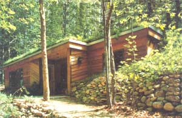
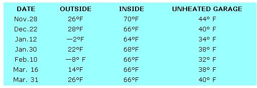

Joyce Rinker has experienced the advantages of earth-sheltered living firsthand, during…
More than a year ago (in MOTHER NO. 54, page 112) this magazine carried a story about a beautiful earth-sheltered home in Michigan. The dwelling was barely one year old at the time, so we asked Daniel Pinker (who had built the house for his daughter Joyce) to let us know if he was still satisfied with the structure after another round of seasons had passed.
Well, Mr. Pinker visited MOTHER'S offices not long ago and brought us some facts and figures about Joyce's second underground year. We found the data fascinating and-whether you're contemplating building an earth-sheltered dwelling or not-we think Mr. Rinker's information will interest you, too!
As some of you may remember, the Rinker home's roof is covered with an average of eight inches of sandy soil and landscaped with native blueberries and other forest vegetation. The insulation provided by this layer of earth, Daniel tells us, has proved to be more than adequate to meet the challenges of the very cold northern Michigan climate. For instance, when the outside temperature dropped below zero, Mr. Pinker reports, the air inside the dwelling would (with no heat source in use) fall only three degrees during the first two hours ... and another three to five degrees in the next six to seven hours. Basing his figures on such experiences, Daniel has estimated the R-value of the earth-covered roof to be more than 100!
Daniel calculates that Joyce used about 9,290 pounds of cut-for-free (on her 4-1/2 wooded acres) firewood to maintain a comfortable temperature in the home over the area's 240 annual heating days. This indicates that the house allowed heat to escape at a maximum rate of about 6,450 Btu's per hour (any comparable above-ground structure-in the same chilly location-would likely lose more than 15,000 Btu's per hour!).
In order to further illustrate the efficiency of the dwelling, Mr. Pinker provided us with the following sample temperature readings for the winter of 1978/1979... all of which were taken before Joyce's Ashley wood stove was fired up for the day:
(And if the above facts and figures don't impress you, consider this: Daniel reports that-in a closed bedroom during the middle of winter-just having the television on would raise the temperature a total of six degrees in one short hour!)
Last summer-in northern Michigan- the temperature veered from nighttime lows in the 40° range to daily highs that hovered right around 100°F! During that period-with no fans or air conditioners in use-the air inside the Pinker home varied from 60° (with all the windows open) to 76°F (on a very warm afternoon, while cooking and running the washing machine at the same time).
On a sample midsummer's day (July 28, 1979) the region's outdoor temperature stood at 72°F at 9:00 a.m., while at the same time the air within the home registered 70°. By 3:00 p.m. on the same day, however, the outside temperature had risen to a sizzling 93°... but Joyce was able to enjoy a comfortable 72° in her naturally cooled house.
Daniel Rinker's carefully kept figures show that-during her first two years of earth-sheltered living-Joyce saved at least 67% on her home heating and cooling costs ... as compared to what those bills would have been in an aboveground dwelling of equivalent size (1,220 square feet).
And the energy savings would have been even higher, Mr. Pinker points out, if he had used earth covering on more than 78% of the home's roof and wall area. Such additional insulation, however, would have made it impossible to include the windows in every room, which contribute to the house's airy, open-feeling interior.
Furthermore, in addition to being very energy-efficient, Joyce's home is actually less humid than an aboveground dwelling (she has noted that the air's moisture level stays at a nearly constant 50 to 52%)... is quieter ... requires less upkeep ... and blends in with its surroundings in a way that a conventional house never could. All in all, the Rinkers say they'd be hard pressed to understand-given these advantages-why anybody wouldn't want to "live underground"!
|
 |
 |
|